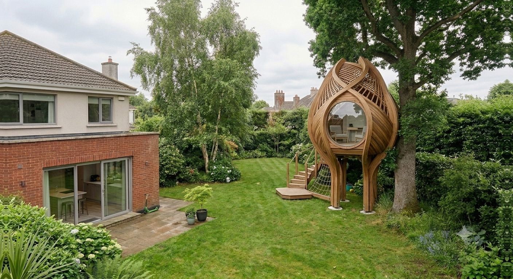
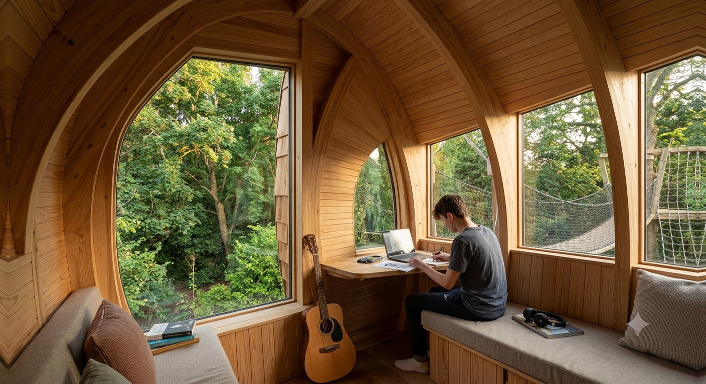
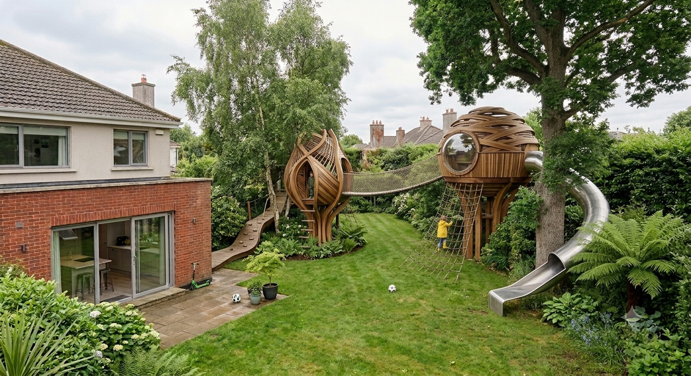

Stand at the back door and look at your garden. You are almost certainly measuring the ground.
That is how everyone thinks about garden space — as a footprint. So much lawn, so much patio. Any new room has to come out of it, so building something means the garden gets smaller. Most people accept that trade without ever questioning it.
Now look up.
Above the lawn is space that is already yours but rarely gets counted. When you think about what your garden could do, you probably think about the ground. But what if the extra space was above it?
That is not a thought experiment. People build up there, in Ireland, in ordinary gardens — including small ones.
The Same Garden
What’s above your garden
The same garden. The only thing that has changed is where you are looking.
The Surprise
You don’t need a tree
Here is the part that surprises people.
A treehouse without a tree sounds like a contradiction, and it isn’t. A structure can bring its own support — posts, stilts, columns or an engineered frame — and stand up entirely on its own.
That matters more than it sounds. The moment a suitable tree stops being a requirement, the idea opens up to gardens where a traditional treehouse would not work.
There are three ways one of these can stand up.
01
Freestanding
The structure stands on its own supports, so no suitable tree is required.
02
Part tree, part support
A tree forms part of the structure, with additional engineered support carrying the rest. Common where there is a good tree, but not one that can do the whole job alone.
03
Tree-supported
The traditional version, where suitable trees form part of the support. It depends entirely on having the right tree in the right place.
Which route works depends on the garden, the structure and what you want to use it for. The important point is that a suitable tree is not a requirement.

The Use
What it can be
This is where people underestimate it. The picture in most heads is a small timber box for small children, outgrown in about three summers.
It does not have to be that.

Irish builders publish elevated structures used as dens, play spaces, reading places, games rooms and hangout spaces, creative and art spaces, music spaces, quiet retreats, and occasional workspaces. One Irish maker’s published projects include a games room in a Dublin garden and an adult retreat in County Louth with a wrap-around deck.
Not every structure suits every use, and the use changes what has to be built. Insulation, power, glazing, how you get up there and how often you go — somewhere to read on a June evening and somewhere to work in February are different briefs.
It is up in the air, it is yours, and going up there feels different from walking across the lawn.
The Ambitious End
Take it further
The freestanding pod is only one version of the idea. At the ambitious end, an elevated space can become a much bigger piece of the garden.

Two structures instead of one, joined by a bridge. A climbing net on one side and a slide off the other. A route through the garden that happens in the air rather than on the ground.
This is the ambitious end, not the starting point. It is shown here because the idea scales — and because, once the tree is optional, the design is no longer dictated by what your garden happened to grow.
One important distinction. This is not something anyone sells off a shelf. It is not a standard Irish product, it would not suit every garden, and nothing about a structure this size should be assumed to be exempted development.
Irish Supply
What Ireland already has
You do not have to import this idea.
Treehouses.ie, based in Clare, designs and builds treehouses, cabins, decks and other garden structures throughout Ireland, in timber and steel. They say it plainly: a structure can be supported by one or more trees or freestanding. They will build anything from a bare shell to a fully insulated and fitted interior.
Forest Wild Treehouses designs and builds across Ireland for adults and children, and publishes projects in ordinary gardens — several of them small Dublin ones. Their work includes a games room, play towers and an adult retreat.
Both work bespoke, to the garden. Neither publishes a standard price.
PlotNua has no arrangement with either of them. They are named because their own published work is the evidence that this is built in Ireland.
The Practical Part
Now the practical part
Here is what decides whether this is a nice idea or something you can do.
Planning
What the rule says
Garden structures come under Class 3 of the exempted-development regulations, as substituted in July 2026. It covers “the construction, erection or placing within the curtilage of a house of any tent, awning, shade or other object, greenhouse, garage, store, shed or other similar structure”, subject to six conditions. The ones that matter here:
nothing forward of the front wall of the house
everything of this kind on the property, added together, no more than 30 m²
it must not leave you with less than 25 m² of private open space to the rear or side
the height must not exceed 4 metres for a tiled or slated pitched roof, or 3 metres in any other case
no human habitation, and no use except one incidental to enjoying the house
What that can mean in practice
The following is a PlotNua illustration using assumed dimensions. It is not a rule, and your own figures will differ.
The height limit is measured to the top of the whole structure, from the ground. An elevated space has to fit its elevation, its headroom and its roof inside that one number. Assume roughly 2.1 m of internal headroom and a modest pitched roof, and an illustration like that leaves somewhere around a metre of elevation inside a 4 m limit. Lift the floor higher and the total climbs quickly.
The overall height limit can significantly constrain how high an enclosed elevated structure can sit while staying within Class 3. A proposal outside those limits needs a site-specific planning check. The formal route to an answer for a specific proposal is a Section 5 Declaration from your local authority.
Building Regulations
A separate regime with its own exemption. The Building Regulations exempt a single storey building ancillary to a dwelling, detached, not more than 25 m², within the same 3 m / 4 m heights, and used exclusively for recreational or storage purposes — expressly not for any trade or business, and not for human habitation.
Two things worth knowing. The area figures are not the same: planning now allows 30 m², the Building Regulations exemption is 25 m². And the exemption is written for a single storey building — whether a raised structure is read that way is not something PlotNua could establish, so it is a question for your builder and your local Building Control Authority.
Getting up there
Access is a design problem, not an afterthought. Depending on the structure, getting up there might involve steps, a ladder, a bridge or a combination of them.
Stairs, ladders and landings take up ground too. Nobody should tell you an elevated structure costs you no garden at all. Supports, access, foundations and the space kept clear around it all take some. The more accurate claim is that much of the garden underneath and around it can stay useful.
Safety
Being above the ground changes the conversation. Worth asking your builder about: the structure and its supports, safe access, guarding and fall protection, who will actually use it, and what inspection and maintenance it needs. Where a living tree is carrying load, add an arborist’s assessment to that list.
The European playground-equipment standard, EN 1176, is written for permanently installed equipment in public or shared settings — parks, schools, housing estates. Equipment for private family use at a single home is outside its scope. So if a builder tells you a structure meets it, that is a commitment they have chosen to make, not a mandatory domestic requirement. A good question to ask, and a good answer to get.
Cost
Quote required. None of the verified Irish builders publishes a standard price. They build bespoke, to a particular garden, and at least one says a site visit is essential before design begins. A structure that carries people at height gets designed for the ground it stands on.
PlotNua does not publish a figure for this and will not borrow one from another market.
Insurance
Outbuildings such as a garden shed are usually within buildings cover. The CCPC advises that if you extend or improve your home you may need to increase that cover, and to review it after building work. It also says plainly that specific exclusions vary between policies and should always be checked.
PlotNua could not establish any general Irish position on elevated garden structures specifically. Tell your insurer what you are planning before you build, and ask about the structure, its contents, and liability if someone is hurt.
Questions
The practical questions
Do I really not need a tree?
Correct. An Irish builder states it directly: a structure can be supported by one or more trees, or freestanding. Where there is no suitable tree, the structure brings its own support.
Is it just for kids?
No. Irish builders publish elevated structures designed for adults and for children — a games room in a Dublin garden, an adult retreat in County Louth with a wrap-around deck, play towers described as being for all ages.
Can I sleep in it, or let someone live in it?
No. Both the planning exemption and the Building Regulations exemption exclude human habitation. This is a space to use, not a place to live.
Could I work in it?
Carefully. The Building Regulations exemption covers use that is exclusively recreational or for storage, and expressly excludes use for a trade or business. Whether working from home for an employer falls inside that is not something PlotNua could establish. Ask before you build if that is the plan.
Will I lose garden space?
Some. Supports, access, foundations and the clear space around the structure all take ground. What you keep is much of the space underneath and around it — the part that would otherwise have gone entirely.
Will the neighbours see in — or will I see into their garden?
It is a real consideration, and Irish builders design around it: one published Dublin project is described as elevated specifically to give a sense of being in the canopy while avoiding overlook of neighbouring gardens. Class 3 itself contains no window-to-boundary condition, so this is a design conversation and, for anything ambitious, a planning one.
What if I do want to use a tree?
Have it looked at by an arborist before anything is designed. Separately, a planning authority can make a Tree Preservation Order under section 205 of the Planning and Development Act 2000, which can prohibit cutting down, topping, lopping or wilful destruction of the trees it names — and contravening one is an offence. Whether a TPO also restricts attaching a structure to a tree is not something PlotNua could establish. If your tree might be protected, ask your local authority.
How much does it cost?
Nobody publishes a price. Every verified Irish route is a quotation after a site visit. PlotNua will not invent a figure or borrow one from another country.
Looking Ahead
Looking ahead
Everything future-facing on this page is in this section and nowhere else.
What makes this hard to judge from a photograph is that the answer depends on things only your own garden knows: how much clear space there is, what is already built, how close the boundaries are, how high you would want to go, and whether there is a tree worth using.
Those are answerable questions. A future version of PlotNua could ask a small number of them and tell you honestly whether an elevated structure looks straightforward where you are, where it starts to need a planning conversation, and where it plainly does not work.
That does not exist yet. Nothing on this page assesses your property.
Evidence
The evidence behind this
Where this page states something, it is because a named source states it. Where no source could be found, the page says so rather than filling the gap.
What the planning rules actually say — read directly
Class 3, as substituted by S.I. No. 338 of 2026, in force 27 July 2026. It permits “the construction, erection or placing within the curtilage of a house of any tent, awning, shade or other object, greenhouse, garage, store, shed or other similar structure”, subject to six conditions: nothing forward of the front wall of the house; a combined floor area for all such structures of no more than 30 square metres; no reduction of private open space to the rear or side below 25 square metres; a height limit of 4 metres for a structure with a tiled or slated pitched roof and 3 metres in any other case; no use for human habitation; and no use other than a purpose incidental to the enjoyment of the house.
The area figure changed. The previous limit was 25 square metres. The 2026 substitution raised it to 30. Both figures are stated here because a homeowner reading older guidance will meet the old one.
Class 3A carries the same 3-metre and 4-metre height limits. Article 9(1) sets out the general restrictions that can remove exempted-development status from any class. Read first-party on the Irish Statute Book, 25 September 2026.
What the Building Regulations say — a separate regime
Building Regulations 1997, S.I. No. 497 of 1997, Article 8 and the Third Schedule, read first-party 25 September 2026.
Article 8 exempts from the Regulations “works in connection with a building referred to in the Third Schedule … or a building referred to in the Third Schedule”.
Third Schedule, Class 2 covers “a single storey building (not being a building described in Class 1) ancillary to a dwelling (such as a summer house, poultry-house, aviary, conservatory, coal shed, garden tool shed or bicycle shed)” on four conditions: detached from any other building; a floor area “not exceeding 25 square metres”; a height “not exceeding 3 metres, or in the case of a building with a pitched roof, not exceeding 4 metres”; and “used exclusively for recreational or storage purposes” or the keeping of plants, birds or animals for domestic purposes, and “shall not be used for the purposes of any trade or business or for human habitation”.
The two regimes do not use the same area figure. Planning allows 30 square metres. The Building Regulations exemption is 25. A structure between the two can be exempted development for planning and still fall inside the Building Regulations.
Trees, standards and insurance
Section 205, Planning and Development Act 2000. A planning authority may make a Tree Preservation Order in the interests of amenity or the environment; it is a reserved function of the elected members. An order may prohibit “the cutting down, topping, lopping or wilful destruction” of the trees it names, and contravening one is an offence. Whether a tree is subject to one is a matter for the planning authority in whose area it stands.
EN 1176 is the European standard for playground equipment. Its scope is permanently installed equipment in public or shared settings. Equipment intended for private family use at a single home falls outside it. It is not a mandatory domestic requirement and nothing on this page presents any structure as certified to it.
Competition and Consumer Protection Commission, the statutory Irish consumer body, on home insurance. Buildings cover “usually includes … garages or outbuildings such as a garden shed”. “If you extend or improve your home, you may need to increase your buildings cover.” Review your cover if “you extended or renovated your home”. And: “Standard exclusions are in every policy but specific exclusions vary. Always check before you sign up.” Liability cover typically responds where “a visitor … is injured, becomes ill or dies in your home and you’re at fault”.
Who builds these in Ireland — first-party, read not contacted
Treehouses.ie, County Clare. From their own site: “We design & build treehouses, playhouses, cabins, sheds, pergolas, decks, gates, & more throughout Ireland”, in wood and steel, “custom, one off builds”. The decisive sentence for this Discovery: “Supported by one or more trees or freestanding amongst the branches, different solutions will suit different gardens.” Also: “A site visit is essential … before we begin the design”, and finish levels “from the basic structure or shell only, to including insulation, interior fixing and fittings”.
Forest Wild Treehouses, Ireland. Bespoke treehouses for adults and children, and play towers described as for all ages. Published Irish projects include a Dublin games room treehouse “elevated and built around a mature birch … while avoiding overlook of neighbouring gardens”; a County Louth adult retreat in a mature oak with a wrap-around deck; a Wicklow play tower; and two small urban Dublin gardens. Silver-gilt and Best in Small Garden Category at Bloom 2018.
No price, from anyone. No Irish provider publishes a price, a range or a rate. Verified across all three routes below. Treehouses.ie will quote remotely for smaller structures only, and only on a very specific enquiry; everything else follows a site visit.
Read, not contacted. Everything above is from these companies’ own published pages. No builder, local authority, insurer or homeowner was contacted, and no permission was requested.
Context only — not presented as Irish supply
Berko Pod Systems — The Treehouse. Held in PlotNua Atlas with a verification status of Verified, and recorded in a Treehouses category outside the Garden Room certification boundary. It is a manufactured product rather than a bespoke elevated build, and it is included here only to mark that distinction.
Cheeky Monkey Treehouses Ltd (England & Wales, company 06596279) publishes a free-standing-on-stilts service. Non-Irish. Context only, and no price of theirs is used anywhere on this page.
What this evidence does not establish
Cost — no Irish figure of any kind. How many Irish makers exist. Whether a raised structure is a “single storey building” for the Building Regulations.Whether working from home for an employer is a “trade or business”.Whether a Tree Preservation Order restricts attaching a structure to a protected tree.Any general Irish insurance position on elevated garden structures.Whether overlooking bites on a Class 3 structure, which contains no window-to-boundary condition. That any particular garden can take one. That the structure shown in the last photograph is available off the shelf, or would be exempted development. And that PlotNua has assessed anything.
PlotNua
This property check is being prepared
The questions that would decide this are practical ones — how much clear space you have, what is already built in the garden, how close the boundaries are, how high you would want to go, and whether there is a tree worth using. PlotNua is working on a check that asks them honestly. It is not ready, and nothing on this page assesses your property.